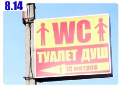
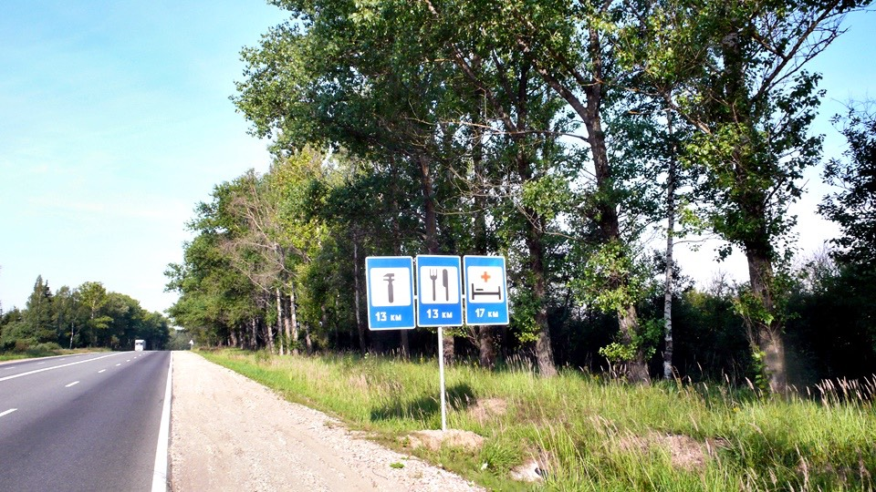
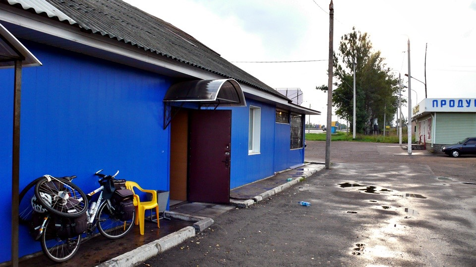
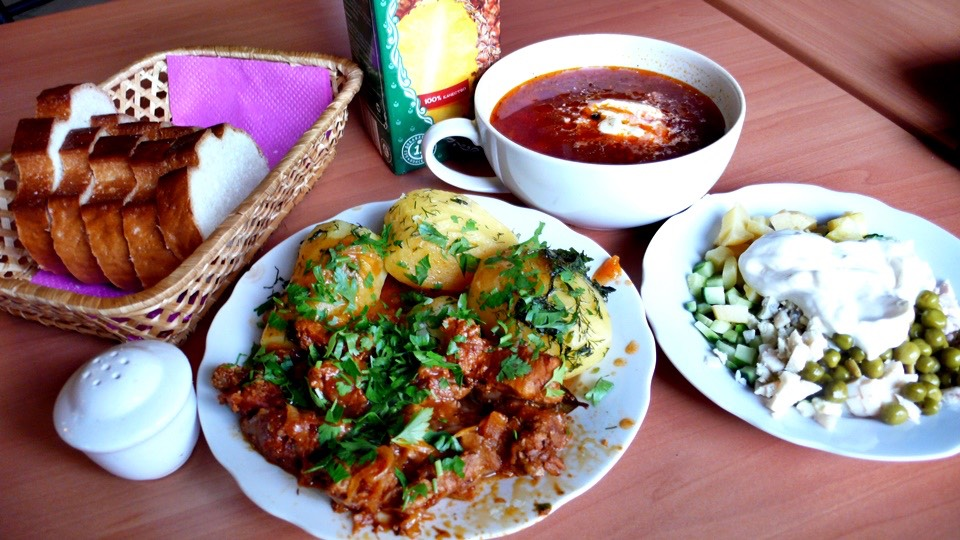
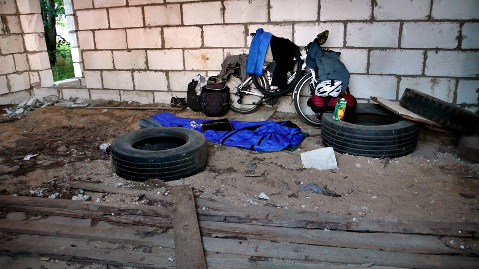
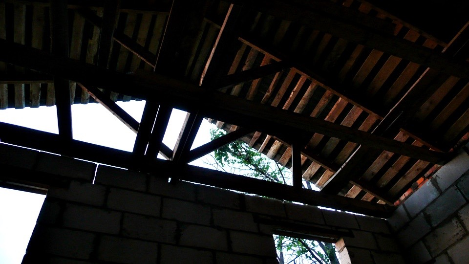
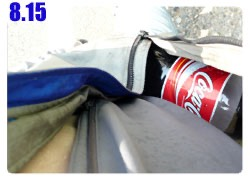

過夜地點選擇的標準越降越低，連這樣的公車站都可以睡一晚，那以後要找露營的地點就不會挑三揀四的。
晚上快十點的時候就躺平在帳篷裡面，整個人很愛睏，這幾天都很愛睏，不同的是前幾天愛睏也不能睡覺，遊記整理個沒完。
今天愛睏打個大哈欠，想睡就睡～沒什麼東西好牽掛的。
早上起來開始收裝備，這兩個新輪胎的攜帶方式真是非常的有創意，而且很實用，兩個輪胎向前翻轉就變成這樣，如此就不會影響拿後側包包的物品。
水壺只剩下一口水，該拿來喝還是洗把臉恢復精神？
最後決定洗把臉，以免自己蓬頭垢面看起來像鬼一樣，想喝東西等會看到商店要什麼有什麼，別在意這一小口自來水。
離開公車站大約十分鐘，就看見這一間全新蓋好，但是尚未完工啟用的加油站，出入口都封閉，昨天要是再多騎一小段路就可以睡在這邊，千金難買早知道。
太陽還沒爬得很高，草原上都瀰漫著一整片的霧氣，早上騎車非常涼快，氣溫都在二十度左右徘徊。
包包裡的蛋糕是非常實用的糧食，不僅好攜帶、口味很多、方便邊騎車邊吃、價錢便宜，而且只要吃一條就可以當作一餐。
早上就吃了一條蛋糕，吃完依然沒水可以喝，肚子雖然不餓了，但是口變得更渴，趕緊出現商店吧。
早上七點半的時候發現這間餐廳，門口的招牌寫著8~20，還差半小時才營業，但是裡頭有個媽媽在盤點。
拿了一些鮮奶、果汁牛奶和蛋糕，現在知道怎麼買牛奶而不會買成優酪乳了。
剛才吃完蛋糕，現在就一口氣喝掉一公升的鮮奶，這樣組合起來也是標準的早餐。
只是沒想到喝鮮奶會越喝越渴，蛋白質的東西都需要水分才能消化吸收，剛才應該買瓶果汁才對。
以往的這個時候只要看見餐廳就會進去洗臉兼寫遊記，等離開餐廳的時候就已經是日正當中，涼爽的氣溫不再。
所以今天沿路看到很多餐廳都沒停下來，打算中午的時候再找地方整理遊記，這樣離開餐廳就是下午兩三點，正好變成躲太陽。

昨天只看見往白俄羅斯首都的指示牌，距離不明，今天答案揭曉，目前距離還有五百六十八公里。
這時候就要開始規劃這段路分幾天走比較適合。
正常的走法是五天路程，每天一百一十公里左右，辛苦一點的話四天也可以騎到，每天一百四十公里，瘋狂一點三天也沒問題，每天一百九十公里。
沒日沒夜的騎，兩天也是可以到，每天騎兩百四十公里，想申請世界紀錄的話，那就挑戰看看一天騎到首都去吧。
這個告示牌上有一個地名叫做『嘎嘎林(GAGARIN)』，只差一個字就是嘎嘎嘎了！真是太可惜了～如果有個地方叫嘎嘎嘎該多好！
這段路比想像中還要冷清很多，都沒有村鎮、店家和加油站也是少得可憐，越往西邊走不是應該越繁華嗎？
早上九點多發現休息區，沒進去餐廳反而往這個招牌指示的方向走，是一間付費廁所。
廁所收費五盧布，另外也可以淋浴，收費三十盧布，付了五盧布之後開始舒服的全身擦澡。
這邊很偏僻，不像會有自來水，水龍頭扭開是超冰的水，心裡想說應該是山泉水吧？
拿著空空的水壺問阿姨說這個水可以裝來生飲嗎？阿姨說沒問題。
所以我就一口氣喝了一公升的冰水，然後再裝滿兩個水壺，滿肚子都是水可以慢慢的吸收，今天也都是山路的地形，等一下就要汗流不止了。
離開休息區之後五分鐘，小多停在橋邊，我則在橋下，這段旅程要先暫停一下。
阿姨說水可以生飲，為什麼一喝馬上就拉肚子，是因為水太冰的關係嗎？喝起來甘甜還蠻順口的，怎麼會這麼毒呢？
在橋下方便完，又過了十分鐘，再度到草叢裡報到。
沒道理呀～我的腸胃經歷過中國和哈薩克的訓練，怎麼會輕易的就敗在一公升的冰水上。
還好拉完這一次之後就算結束了，之後喝水壺裡的水也沒事，可能真的一口氣喝太多冰水了。
但是以後裝水還是注意一下水的來源比較好，從餐廳裝來的自來水跟從廁所裝的感覺就不太一樣。
趁著早上超涼快的天氣趕了不少路，中午才去加油站裡面休息，加油站附設桌椅，裡面還開冷氣，非常舒服的地方，買了一瓶果汁和冰淇淋慢慢享受。
騎車的遊記好寫多了，因為也沒發生什麼大不了的事情，一整天不是迷路就是騎車，順著時間軸整理大概兩個小時就能搞定。
下午兩點半離開加油站，看見一輛長途卡車來加油，它會經過波蘭跟瑞典，這一段路應該也是和我一樣穿越白俄羅斯走。
騎車我都盯著地面看，運氣地很好居然撿到錢，雖然只有五塊錢但還是很爽，這樣早上在廁所擦的澡跟喝的冰水就變成免費了。
為什麼路邊會有五塊錢，眼光搜尋著附近的地面，結果又撿到一個兩元的硬幣。
山區天氣多變化，烏雲聚集、閃電交加，看來馬上又要下雨了，心中除了默默祈禱之外別無他法。
往前騎發現真的下雨了，但不是下在頭上，而是下在腳下，相當幸運地，等我騎到這裡時，先前已經下過一場雨，差一點就又要變成落湯雞了。

晚上八點先到餐廳吃晚餐，當然擦個澡是一定要的，有商店的話也可以買點零食吃。
店員歪著頭問我想吃什麼？
我也歪著頭跟她說俄文不會講，比手畫腳外加借餐廳客人正在吃的盤子用一下，晚餐可不想吃得太寒酸。
熱熱的蔬菜蘿蔔湯、燉牛肉配上三顆煮馬鈴薯、小黃瓜豌豆白煮蛋和雞肉絲的綜合沙拉、麵包以及一公升裝的鳳梨汁。

不會講俄文都能點成這樣，心中不禁暗暗得意起來，灑上很多鹽巴補充流汗的消耗。
吃飯吃到一半，有個客人拿了一副眼鏡放在桌上，看了一眼發現跟我的款式一模一樣，想不到莫斯科也能買到這牌子的眼鏡。
才想拿出自己的眼鏡給他看，就發現弄不見了，客人拿過來的那一副正是我的，剛才擦澡的時候忘在洗手台，差一點遺失清單又要追加一項了。
不想拖得太晚找過夜的地方，儘管餐廳裡有方便的電力，還是沒敢耗在店裡寫完遊記再出發。
下過雨後天空很乾淨，雲層稍微多了些，太陽還沒下山就先被雲層給擋住，今天的日照時間會短一些。
傍晚的時候下過一場雨，夜裡不知道會不會再來一次，保險起見還是找個有屋頂的地方過夜。
騎過這條河的時候發現河水很乾淨，橋下也有平坦的地面可以露營，這已經很接近心目中最理想的露營場所，如此就不用費心水源的問題。
可惜找不到下橋的路，人走過去是沒問題，但是小多要跨過護欄、走沒有路面的陡峭斜坡，以小多現在背負的重量，不敢冒這個險。
下一個找到的是荒廢的穀倉，停靠小多，自己先進去打量一下適不適合過夜？
穀倉分為兩間，比較大的一間地面全部都是雜物，廢輪胎、水泥柱、木頭，要找一個能躺下來的地方都很困難。
比較小的那一間雜物就比較少，取而代之的是沒有堅硬的地面，而是鬆軟且佈滿木屑、麥殼這些廢渣的泥地。
還不算太糟～鋪上充氣之後的睡墊製作出一小張床，少了你今天就難睡了。

有牆壁擋風的地方就不想拿出睡袋，睡在穀倉裡也有木頭屋頂的庇佑，就算夜裡下雨也不打緊。

依照今天跟昨天騎的距離來估算，大概再三天就可以抵達白俄羅斯的首都，然後歐洲的大門就在不遠處了。
繼續閱讀：8.15 小叮噹的口袋

俄羅斯-盧布－ 1：1.3 台幣
8.14
總計：373元
商店牛奶、果汁牛奶、冰淇淋、蛋糕130元、廁所5元、加油站果汁、冰淇淋64元、晚餐燉牛肉配馬鈴薯、綜合沙拉、高麗菜蘿蔔湯、麵包、鳳梨汁174元